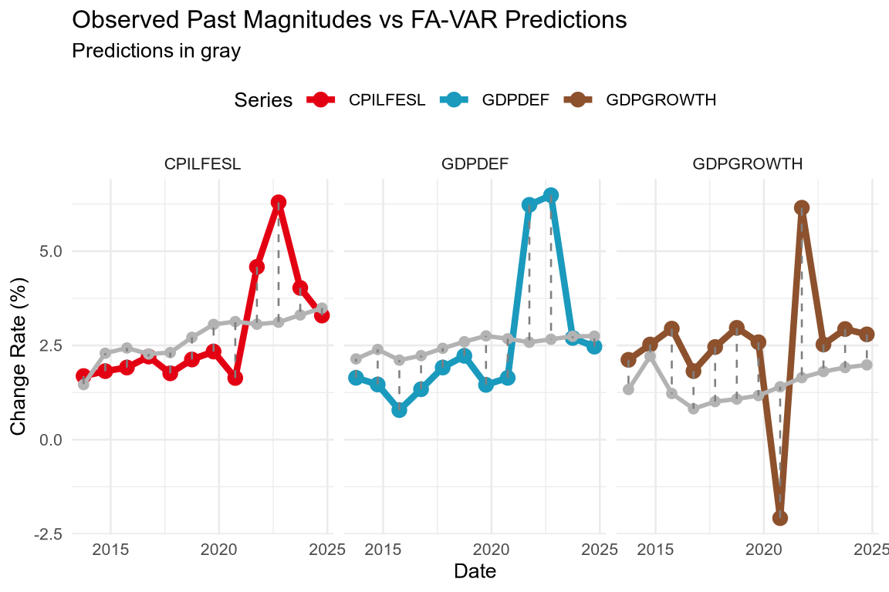

run_models <- F
reinstall_ecod025ps1 <- F
repos <- "https://cran.rstudio.com"Problem Set 1
Problem
Recent headlines emphasize the challenges faced by central banks: inflation remains persistent in the U.S., global supply chain uncertainties continue, and growth forecasts remain fragile amid geopolitical risks.
Goal
Provide policy recommendations for the Federal Reserve (Fed) new forecasting system.
Before running the code
Please please please open “problem-set-1.Rproj” in RStudio.
Do not open the QMD file directly or it can re-download all the datasets to the wrong directory.
GitHub repository
All the codes and data for this problem set are available in the GitHub repository: https://github.com/pachadotdev/ecod025.
The zip file with the project is here: https://github.com/pachadotdev/ecod025/archive/refs/heads/main.zip.
Technical note
For this problem set, the models were written in C++ using the Armadillo library for linear algebra (Sanderson and Curtin 2016; Sanderson 2024).
To run the model functions, you need to change this boolean to “TRUE”, otherwise when rendering the file it will load pre-computed results.
The functions were made available in the R package ecod025ps1 which can be installed from this same repository:
if (run_models) {
# devtools::install("../ecod025ps1/")
if (reinstall_ecod025ps1) {
if (require("ecod025ps1")) remove.packages("ecod025ps1")
}
if (!require("ecod025ps1") && run_models) {
if (!require("cpp4r")) install.packages("cpp4r", repos = "https://pachadotdev.r-universe.dev")
if (!require("armadillo4r")) install.packages("armadillo4r", repos = "https://pachadotdev.r-universe.dev")
install.packages("ecod025ps1", repos = "https://pachadotdev.r-universe.dev")
}
if (!require("dynlm") && run_models) install.packages("dynlm", repos = repos)
}if (run_models) {
library(ecod025ps1)
library(dynlm)
}R package for accessing the data:
if (!require("alfred")) {
install.packages("alfred", repos = repos)
}
library(alfred)Additional packages for data manipulation and plotting:
if (!require("dplyr")) {
install.packages("dplyr", repos = repos)
}
if (!require("lubridate")) {
install.packages("lubridate", repos = repos)
}
if (!require("rlang")) {
install.packages("rlang", repos = repos)
}
if (!require("purrr")) {
install.packages("purrr", repos = repos)
}
if (!require("ggplot2")) {
install.packages("ggplot2", repos = repos)
}
if (!require("tintin")) {
install.packages("tintin", repos = repos)
}
library(dplyr)
library(lubridate)
library(rlang)
library(purrr)
library(ggplot2)
library(tintin)Additional package for the Bayesian VAR model:
if (!require("cmdstanr")) {
install.packages("cmdstanr",
repos = c("https://mc-stan.org/r-packages/", getOption("repos")))
}
library(cmdstanr)
# do we need to install Stan?
if (is.null(cmdstanr::cmdstan_path())) {
install_cmdstan()
}Models
Vector Autoregressions (VAR)
\(\text{VAR}(p)\) for inflation (\(\pi_t\)) and growth (\(g_t\)):
\[ y_t = A_1 y_{t-1} + \ldots + Ap y_{t-p} + u_t = A(L) y_t + u_t,\: y_t = [\pi_t, g_t]^T. \]
Factor-Augmented VAR (FA-VAR)
\[ \begin{aligned} X_t &= \Lambda F_t + e_t, \cr F_t &= \Phi_1 F_{t-1} + \ldots + \Phi_p F_{t-p} + v_t, \cr y_t &= B(L)y_{t-1} + C(L)F_{t} + u_t \end{aligned} \]
Dynamic Factor Model (DFM)
\[ \begin{aligned} X_t &= \Lambda F_t + u_t,\: u_t \sim N(0, R), \cr F_t &= AF_{t-1} + \eta_t,\: \eta_t \sim N(0, Q). \end{aligned} \]
For DFM, we consider VAR models that are identified and that can be written using lag polynomials such that besides \(F_t\) lagged definition we have
\[ \begin{aligned} A(L) F_t &= v_t \cr B(L) u_t &= e_t, \end{aligned} \]
where \(A(L)\) and \(B(L)\) are lag polynomials with \(p\) and \(q\) lags, respectively (Hansen 2022).
To avoid identification issues, we will restrict the lag polynomial \(B(L)\) to be diagonal.
Defining the inverse lag operators
\[ \begin{aligned} D(L) &= A(L)^{-1} \cr C(L) &= B(L)^{-1} \end{aligned}, \]
then we have
\[ \begin{aligned} X_t &= \Lambda F_t + u_t \cr \implies C(L) X_t &= C(L) \Lambda F_t + C(L) u_t \implies C(L) X_t &= C(L) \Lambda D(L) v_t + e_t \cr \implies C(L) X_t &= \Lambda(L) v_t + e_t. \end{aligned} \]
Furthermore, we will restrict \(\Lambda(L) = C(L) \Lambda D(L)\) to be a polynomial of \(l\) lags.
The static form of the dynamic model is
\[ C(L) X_t = HV_t + e_t \]
for a matrix \(H\) with dimensions \(N \times rl\) columns provided that \(X_t\) and u_t$ are \(N \times 1\), \(\Lambda\) is \(N \times r\) (\(r < N\)), and \(F_t\) is \(r \times 1\).
To avoid scaling issues, we will transform the elements of \(X_t\) to have mean 0 and common variance.
State-space representation
Vector Autoregressions (VAR)
Model specification (reduced form):
- \(y_t = A(L) \cdot y_t + u_t\)
State-space form (companion representation):
- Observation: \(y_t = [I_K, 0, \ldots, 0] \cdot \chi_t + u_t\)
- Transition: \(\chi_t = F \cdot \chi_{t-1} + \eta_t\)
where: - \(\chi_t = [y_t', y_{t-1}', \ldots, y_{t-p+1}']'\) is the state vector (\(Kp \times 1\)) and \(F\) is the companion matrix (\(Kp \times Kp\)) - \(y_t\) is \(K \times 1\) (observed variables) - \(A_i\) are \(K \times K\) (coefficient matrices for \(i = 1, \ldots, p\)) - \(u_t \sim N(0, \Sigma)\) (error term) - \(\Sigma\) is \(K \times K\) (covariance matrix)
Estimation: Equation-by-equation OLS
Factor-Augmented VAR (FA-VAR)
Model specification:
- \(X_t = \Lambda F_t + e_t\)
- \(F_t = \Phi_1 F_{t-1} + \ldots + \Phi_p F_{t-p} + v_t\)
- \(y_t = B(L) y_{t-1} + C(L) F_{t-1} + u_t\)
where \(X_t = [y_t, y_{t-1}, \ldots, y_{t-n}]\) is the information set constructed from current and lagged values of the target variable.
We use lagged factors \(F_{t-1}\) (not contemporaneous \(F_t\)) in the augmented VAR to avoid data leakage, since \(F_t\) is extracted from \(X_t\) which contains \(y_t\).
State-space form (companion representation):
- Observation: \(X_t = [\Lambda, 0, \ldots, 0] \cdot \chi_t + e_t\)
- Transition: \(\chi_t = A \cdot \chi_{t-1} + \eta_t\)
where: - \(\chi_t = [F_t', F_{t-1}', \ldots, F_{t-p+1}']'\) is the state vector and \(A\) is the companion matrix for the factor VAR - \(X_t\) is \(N \times 1\) (information set: current and lagged \(y\)) - \(F_t\) is \(r \times 1\) (latent factors extracted from \(X_t\), with \(r < N\)) - \(y_t\) is \(K \times 1\) (target variable of interest, \(K=1\) for univariate) - \(\Lambda\) is \(N \times r\) (factor loadings) - \(B(L) = B_1 L + \ldots + B_{p_y} L^{p_y}\) (lag polynomial for \(y\) dynamics) - \(\Phi(L) = \Phi_1 L + \ldots + \Phi_{p_f} L^{p_f}\) (lag polynomial for factor dynamics) - \(C(L) = C_1 L + \ldots + C_{p_f} L^{p_f}\) (lag polynomial for factor impact on \(y\))
Estimation: PCA for factor extraction, OLS for VARs
Dynamic Factor Model (DFM)
Model specification (state-space form):
- Observation equation: \(X_t = \Lambda \cdot F_t + u_t\), \(u_t \sim N(0, R)\)
- State equation: \(F_t = A \cdot F_{t-1} + \eta_t\), \(\eta_t \sim N(0, Q)\)
For VAR(p) factor dynamics, use companion form:
- Observation: \(X_t = [\Lambda, 0, \ldots, 0] \cdot \chi_t + u_t\)
- Transition: \(\chi_t = A \cdot \chi_{t-1} + \eta_t\)
where: - \(\chi_t = [F_t', F_{t-1}', \ldots, F_{t-p+1}']'\) is the state vector (\(rp \times 1\)) and \(A\) is the companion matrix (\(rp \times rp\)) - \(X_t\) is \(N \times 1\) (observed variables, standardized to mean 0, common variance) - \(F_t\) is \(r \times 1\) (latent factors, \(r < N\)) - \(\Lambda\) is \(N \times r\) (factor loadings) - \(A\) is \(r \times r\) (transition matrix for VAR(1)) or \(rp \times rp\) (companion form for VAR(p)) - \(R\) is \(N \times N\) (idiosyncratic covariance, diagonal) - \(Q\) is \(r \times r\) (factor innovation covariance) or \(rp \times rp\) (companion form)
Estimation: EM algorithm with Kalman filter for state estimation
Forecast Comparison Metrics
Root Mean Squared Forecast Error (RMSFE)
\[ \text{RMSFE} = \sqrt{\frac{1}{T} \sum_{t=1}^{T} (y_{t+h} - \hat{y}_{t+h \mid t})^2}. \]
Mean Absolute Error (MAE)
\[ \text{MAE} = \frac{1}{T} \sum_{t=1}^{T} |y_{t+h} - \hat{y}_{t+h \mid t}|. \]
Data
The data analysis begins with multiple measures of inflation and real GDP growth obtained from FRED. The inflation indicators include headline CPI, core CPI (excluding food and energy), food prices, energy prices, the GDP deflator, and the University of Michigan’s survey-based inflation expectations. The plotted series reveal distinct dynamics: energy inflation is highly volatile, largely driven by geopolitical shocks, while core inflation (CPILFESL) and the GDP deflator (GDPDEF) exhibit smoother, more persistent trends that better capture underlying price pressures. The Michigan expectations series serves as a forward-looking indicator of inflation sentiment. Real GDP growth displays a pronounced cyclical pattern, with notable contractions during major downturns such as the 2008 financial crisis and the 2020 pandemic. These observations motivate the use of CPILFESL and GDPDEF as the primary inflation measures, and real GDP growth as the output indicator, for the subsequent forecasting models.
Get the different series used to measure inflation according to FED:
try(dir.create("data"), silent = TRUE)
download_data <- function(series_id) {
fout <- paste0("data/", series_id, ".rds")
if (!file.exists(fout)) {
data <- get_alfred_series(series_id)
data <- as_tibble(data)
saveRDS(data, fout, compress = "xz")
} else {
data <- readRDS(fout)
}
return(data)
}
# Consumer Price Index for All Urban Consumers: All Items
cpiaucsl <- download_data("CPIAUCSL")
# Consumer Price Index for All Urban Consumers: All Items Less Food & Energy
cpilfesl <- download_data("CPILFESL")
# Consumer Price Index for All Urban Consumers: Energy
cpiengsl <- download_data("CPIENGSL")
# Consumer Price Index for All Urban Consumers: Food
cpifood <- download_data("CPIUFDSL")
# GDP Deflator
gdpdef <- download_data("GDPDEF")Get the quarterly real GDP data to compute growth rates:
gdpc1 <- download_data("GDPC1")We also require the ‘University of Michigan: Inflation Expectation (Median expected price change next 12 months)’ as a covariate for DFM:
# University of Michigan: Inflation Expectation (Median expected price change next 12 months)
michigan <- download_data("MICH")Data preparation
We need to filter and differentiate to get inflation rates as
\[ \text{Inflation Rate}_t = 100 \times \frac{C_t - C_{t-1}}{C_{t-1}} \]
We will use October data to compute the inflation rate to match the reported quarterly GDP data.
inflation_mm <- function(data, col) {
data %>%
as_tibble() %>%
arrange(desc(date)) %>%
# keep the most updated figure
group_by(date) %>%
filter(realtime_period == max(realtime_period)) %>%
ungroup() %>%
mutate(year = year(date), month = month(date)) %>%
filter(month == 10) %>%
mutate(
inflation = 100 * (!!sym(col) - lead(!!sym(col))) / lead(!!sym(col))
)
}
cpiaucsl_mm <- inflation_mm(cpiaucsl, "CPIAUCSL")
cpilfesl_mm <- inflation_mm(cpilfesl, "CPILFESL")
cpiengsl_mm <- inflation_mm(cpiengsl, "CPIENGSL")
cpifood_mm <- inflation_mm(cpifood, "CPIUFDSL")
gdpdef_mm <- inflation_mm(gdpdef, "GDPDEF")The GDP data has a different frequency (quarterly) so we need to adjust the code:
gdpc1_yy <- gdpc1 %>%
arrange(desc(date)) %>%
group_by(date) %>%
filter(realtime_period == max(realtime_period)) %>%
ungroup() %>%
mutate(year = year(date)) %>%
filter(year < 2025) %>%
group_by(year) %>%
summarise(gdp = sum(GDPC1), .groups = "drop") %>%
mutate(
date = ymd(paste0(year, "-10-01")),
gdpgrowth = 100 * (gdp - lag(gdp)) / lag(gdp)
)UM data has a different format (it is already in percentage base 100 and lagged 1 year):
michigan_mm <- michigan %>%
arrange(desc(date)) %>%
group_by(date) %>%
filter(realtime_period == max(realtime_period)) %>%
ungroup() %>%
mutate(year = year(date), month = month(date)) %>%
filter(month == 10) %>%
mutate(date = date + years(1)) %>%
rename(inflation = MICH)Merge all into one data frame for plotting:
inflation <- map2_df(
list(
cpiaucsl_mm,
cpilfesl_mm,
cpiengsl_mm,
cpifood_mm,
gdpdef_mm,
michigan_mm
),
c("CPIAUCSL", "CPILFESL", "CPIENGSL", "CPIUFDSL", "GDPDEF", "MICH"),
function(x, y) {
x %>%
select(date, value = inflation) %>%
mutate(series = y)
}
)Plot of the different inflation measures:
ggplot(inflation, aes(x = date, y = value, color = series)) +
geom_line() +
labs(
title = "Inflation Measures",
x = "Year",
y = "Inflation rate (%)",
color = "Series"
) +
scale_colour_tintin_d() +
facet_wrap(~series, ncol = 3) +
theme_minimal(base_size = 10) +
theme(legend.position = "top") +
geom_hline(yintercept = 0, color = "red", linetype = "dashed")ggplot(gdpc1_yy, aes(x = date, y = gdpgrowth)) +
geom_line() +
labs(
title = "Real GDP Change",
x = "Year",
y = "Growth rate (%)",
color = "Series"
) +
theme_minimal(base_size = 10) +
theme(legend.position = "top") +
geom_hline(yintercept = 0, color = "red", linetype = "dashed")The plots show some level of similarity between all series except for CPIENGSL (energy prices) which is more volatile. The series without food and energy (CPILFESL) is more stable and is similar to the GDP deflator (GDPDEF) while the other series have more volatility. The Michigan survey (MICH) shows a proper forward-looking measure of inflation expectations.
Because energy depends on external factors (e.g., geopolitical events that affect oil prices) and food prices are affected by seasonal patterns, we will use the CPILFESL and GDP deflator as our main inflation measure.
GDP is also affected by external factors (e.g., the \(X - M\) component of GDP) but we do not have another measure of GDP growth.
Estimate a VAR model
The Vector Autoregression (VAR) model was estimated to capture the interdependence between inflation and output growth. Optimal lag lengths were selected using the Akaike Information Criterion (AIC), resulting in four lags for core inflation and GDP growth, and six lags for the GDP deflator. The resulting forecasts show that the VAR effectively tracks short-term fluctuations but struggles to capture large structural shocks, particularly around the pandemic period. Forecast errors are more pronounced during volatile episodes, reflecting the VAR’s limited ability to incorporate external influences or latent factors. Nonetheless, it provides a useful benchmark for short-horizon predictions and serves as the foundation for more advanced models.
The goal is to choose the lag length based on information criteria.
The first step is to determine the lag length using information criteria.
For CPILFESL and adapting from Econometrics with R, which uses BIC, we will use the AIC criterion.
\[ \text{AIC}(p) = \log \left( \frac{\text{SSR}(p)}{T} \right) + (p+1)\frac{2}{T}. \]
# compute AIC for AR model objects of class 'dynlm'
AIC <- function(model) {
ssr <- sum(model$residuals^2)
t <- length(model$residuals)
npar <- length(model$coef)
return(
round(c("AIC" = log(ssr / t) + npar * 2 / t), 4)
)
}
# intercept only AR model
AIC(dynlm(ts(cpilfesl_mm$inflation) ~ 1))
AIC(dynlm(ts(gdpc1_yy$gdpgrowth) ~ 1))Looping over different model orders:
# loop AIC over models of different orders
order <- 1:10
inflation_AICs <- vapply(
order,
function(x) {
AIC(dynlm(
ts(cpilfesl_mm$inflation) ~ L(ts(cpilfesl_mm$inflation), 1:x)
))
},
FUN.VALUE = numeric(1)
)
gdpdef_AICs <- vapply(
order,
function(x) {
AIC(dynlm(ts(gdpdef_mm$inflation) ~ L(ts(gdpdef_mm$inflation), 1:x)))
},
FUN.VALUE = numeric(1)
)
gdpgrowth_AICs <- vapply(
order,
function(x) {
AIC(dynlm(ts(gdpc1_yy$gdpgrowth) ~ L(ts(gdpc1_yy$gdpgrowth), 1:x)))
},
FUN.VALUE = numeric(1)
)
saveRDS(inflation_AICs, "data/aics_cpilfesl.rds")
saveRDS(gdpdef_AICs, "data/aics_gdpdef.rds")
saveRDS(gdpgrowth_AICs, "data/aics_gdpgrowth.rds")if (!run_models) {
inflation_AICs <- readRDS("data/aics_cpilfesl.rds")
gdpdef_AICs <- readRDS("data/aics_gdpdef.rds")
gdpgrowth_AICs <- readRDS("data/aics_gdpgrowth.rds")
}
which.min(inflation_AICs)[1] 4which.min(gdpdef_AICs)[1] 6which.min(gdpgrowth_AICs)[1] 4Based on the AIC criterion, we select a lag length of:
- 4 for CPILFESL
- 6 for GDPDEF
- 4 for GDP growth
Now we can estimate the VAR model using var_model() from the ecod025ps1 package:
# remove the last value as it is NA after the the lagged difference
h <- 12L
l1 <- 4L
l2 <- 6L
l3 <- 4LThe interesting exercise is to evaluate the forecasts from the VAR model by subsetting the data “T” years before the end date and compare the predictions with the actual values. One problem in this time horizon is that we have the COVID-19 pandemic (2020) external shock.
In other words, we will consider both in and out of sample model metrics. Because of the GDP data, we need to trim the series before 2025.
common_years <- cpilfesl_mm %>%
select(date) %>%
inner_join(select(gdpdef_mm, date), by = "date") %>%
inner_join(select(gdpc1_yy, date), by = "date")
# subset data
cpilfesl_mm_subset <- cpilfesl_mm %>%
inner_join(common_years, by = "date") %>%
filter(date <= (max(date) - years(h)))
gdpdef_mm_subset <- gdpdef_mm %>%
inner_join(common_years, by = "date") %>%
filter(date <= (max(date) - years(h)))
gdpc1_yy_subset <- gdpc1_yy %>%
inner_join(common_years, by = "date") %>%
filter(date <= (max(date) - years(h)))fit_cpilfesl_subset <- var_model(
na.omit(as.matrix(cpilfesl_mm_subset$inflation)),
p = l1,
include_const = TRUE,
forecast_h = h
)
fit_gdpdef_subset <- var_model(
na.omit(as.matrix(gdpdef_mm_subset$inflation)),
p = l2,
include_const = TRUE,
forecast_h = h
)
fit_gdpgrowth_subset <- var_model(
na.omit(as.matrix(gdpc1_yy_subset$gdpgrowth)),
p = l3,
include_const = TRUE,
forecast_h = h
)
saveRDS(fit_cpilfesl_subset, "data/fit_cpilfesl_subset.rds")
saveRDS(fit_gdpdef_subset, "data/fit_gdpdef_subset.rds")
saveRDS(fit_gdpgrowth_subset, "data/fit_gdpgrowth_subset.rds")if (!run_models) {
fit_cpilfesl_subset <- readRDS("data/fit_cpilfesl_subset.rds")
fit_gdpdef_subset <- readRDS("data/fit_gdpdef_subset.rds")
fit_gdpgrowth_subset <- readRDS("data/fit_gdpgrowth_subset.rds")
}
fit_predictions2 <- tibble(
date = max(cpilfesl_mm_subset$date) +
years(seq_len(fit_cpilfesl_subset$forecast_h)),
prediction = as.numeric(fit_cpilfesl_subset$forecasts),
series = "CPILFESL"
) %>%
bind_rows(
tibble(
date = max(gdpdef_mm_subset$date) +
years(seq_len(fit_gdpdef_subset$forecast_h)),
prediction = as.numeric(fit_gdpdef_subset$forecasts),
series = "GDPDEF"
)
) %>%
bind_rows(
tibble(
date = max(gdpc1_yy_subset$date) +
years(seq_len(fit_gdpgrowth_subset$forecast_h)),
prediction = as.numeric(fit_gdpgrowth_subset$forecasts),
series = "GDPGROWTH"
)
)
fit_predictions2 <- fit_predictions2 %>%
left_join(
inflation %>%
filter(series %in% c("CPILFESL", "GDPDEF")) %>%
filter(year(date) > max(year(date) - h)) %>%
rename(observed = value) %>%
bind_rows(
gdpc1_yy %>%
filter(year(date) > max(year(date) - h)) %>%
select(date, observed = gdpgrowth) %>%
mutate(series = "GDPGROWTH")
),
by = c("date", "series")
)
ggplot(fit_predictions2) +
geom_line(aes(x = date, y = observed, color = series), linewidth = 1.5) +
geom_point(aes(x = date, y = observed, color = series), size = 3) +
geom_line(
aes(x = date, y = prediction, color = series),
linewidth = 1,
color = "gray70"
) +
geom_point(
data = fit_predictions2,
aes(x = date, y = prediction, color = series),
size = 2,
color = "gray70"
) +
geom_segment(
data = fit_predictions2,
aes(x = date, xend = date, y = observed, yend = prediction),
linetype = "dashed",
color = "gray50"
) +
labs(
title = "Observed Past Magnitudes vs VAR Predictions",
subtitle = "Predictions in gray",
x = "Date",
y = "Change Rate (%)",
color = "Series"
) +
scale_colour_tintin_d() +
facet_wrap(~series, ncol = 3) +
theme_minimal(base_size = 10) +
theme(legend.position = "top") +
geom_hline(yintercept = 0, color = "red", linetype = "dashed")For the out-of-sample RMSFE and MAE metrics we need an R-side RMSFE and MAE functions as their C++ counterparts are not exported):
RMSFE <- function(actual, predicted) {
sqrt(mean((actual - predicted)^2, na.rm = TRUE))
}
MAE <- function(actual, predicted) {
mean(abs(actual - predicted), na.rm = TRUE)
}
fit_predictions2 %>%
filter(series %in% c("CPILFESL", "GDPDEF", "GDPGROWTH")) %>%
group_by(series) %>%
summarise(
RMSFE_out_of_sample = RMSFE(observed, prediction),
MAE_out_of_sample = MAE(observed, prediction)
) %>%
ungroup() %>%
mutate(
RMSFE_in_sample = c(
fit_gdpgrowth_subset$rmsfe,
fit_gdpdef_subset$rmsfe,
fit_gdpgrowth_subset$rmsfe
),
MAE_in_sample = c(
fit_gdpgrowth_subset$mae,
fit_gdpdef_subset$mae,
fit_gdpgrowth_subset$mae
)
) %>%
select(
series,
RMSFE_in_sample,
RMSFE_out_of_sample,
MAE_in_sample,
MAE_out_of_sample
)# A tibble: 3 × 5
series RMSFE_in_sample RMSFE_out_of_sample MAE_in_sample MAE_out_of_sample
<chr> <dbl> <dbl> <dbl> <dbl>
1 CPILFESL 1.97 1.19 1.57 0.803
2 GDPDEF 0.975 1.57 0.660 1.27
3 GDPGROWTH 1.97 1.94 1.57 1.34 Estimate a FA-VAR model
The Factor Augmented VAR model is an extension of the standard VAR model seen above. It incorporates latent common factors using the PCA method, allowing one to capture the dynamic relationships among the variables used in the analysis. The FA-VAR predictions can be seen in the forecast above. For the variables CPILFESL, GDPDEF, GDPGROWTH the FA-VAR captures the trends somewhat accurately up until there is a prominent spike. The FA-VAR slightly underestimates any structural shocks, suggesting that the latent factors are not fully capturing their magnitudes. The FA-VAR acts quite similarly to the VAR model estimated. It provides a good benchmark for short-horizon predictions, and it is important to note that it has lower forecast errors than the basic VAR, suggesting that adding latent factors enhances predictive performance.
The FA-VAR model follows a pure time series approach: it creates an information set \(X_t\) from the target variable and its lags, extracts latent factors via PCA, and augments a VAR with these factors.
Model specification: - \(X_t = [y_t, y_{t-1}, \ldots, y_{t-L}]\) (information set created from y and its lags) - Extract \(r\) factors from \(X_t\) using PCA - Estimate: \(y_t = B(L) y_{t-1} + C(L) F_t + u_t\) (augmented VAR with factor lags)
This approach captures nonlinear patterns in the autocorrelation structure through factor extraction.
# FA-VAR parameters (simplified to avoid overfitting)
n_lags <- 3L # Number of lags to create information set X (creates 4 variables)
n_factors <- 2L # Number of factors to extract from X
p_f <- 2L # Factor lags
y <- na.omit(as.matrix(cpilfesl_mm_subset$inflation))
# Estimate FA-VAR models
fit_cpilfesl_favar <- favar_model(
y = y,
n_lags = n_lags,
n_factors = n_factors,
p_y = l1,
p_f = p_f,
include_const = TRUE,
forecast_h = h
)
# Tuned parameters for GDPDEF
n_lags <- 3L
n_factors <- 2L
p_f <- 1L
y <- na.omit(as.matrix(gdpdef_mm_subset$inflation))
fit_gdpdef_favar <- favar_model(
y = y,
n_lags = n_lags,
n_factors = n_factors,
p_y = l2,
p_f = p_f,
include_const = TRUE,
forecast_h = h
)
# Tuned parameters for GDP growth
n_lags <- 3L
n_factors <- 2L
p_f <- 1L
y <- na.omit(as.matrix(gdpc1_yy_subset$gdpgrowth))
fit_gdpc1_favar <- favar_model(
y = y,
n_lags = n_lags,
n_factors = n_factors,
p_y = l3,
p_f = p_f,
include_const = TRUE,
forecast_h = h
)
saveRDS(fit_cpilfesl_favar, "data/fit_cpilfesl_favar.rds")
saveRDS(fit_gdpdef_favar, "data/fit_gdpdef_favar.rds")
saveRDS(fit_gdpc1_favar, "data/fit_gdpc1_favar.rds")if (!run_models) {
fit_cpilfesl_favar <- readRDS("data/fit_cpilfesl_favar.rds")
fit_gdpdef_favar <- readRDS("data/fit_gdpdef_favar.rds")
fit_gdpc1_favar <- readRDS("data/fit_gdpc1_favar.rds")
}
fit_predictions3 <- tibble(
date = max(cpilfesl_mm_subset$date) +
years(seq_len(fit_cpilfesl_favar$forecast_horizon)),
prediction = as.numeric(fit_cpilfesl_favar$forecasts),
series = "CPILFESL"
) %>%
bind_rows(
tibble(
date = max(gdpdef_mm_subset$date) +
years(seq_len(fit_gdpdef_favar$forecast_horizon)),
prediction = as.numeric(fit_gdpdef_favar$forecasts),
series = "GDPDEF"
)
) %>%
bind_rows(
tibble(
date = max(gdpc1_yy_subset$date) +
years(seq_len(fit_gdpc1_favar$forecast_horizon)),
prediction = as.numeric(fit_gdpc1_favar$forecasts),
series = "GDPGROWTH"
)
)
fit_predictions3 <- fit_predictions3 %>%
left_join(
inflation %>%
filter(series %in% c("CPILFESL", "GDPDEF")) %>%
filter(year(date) > max(year(date) - h)) %>%
select(date, observed = value, series) %>%
bind_rows(
gdpc1_yy %>%
filter(year(date) > max(year(date) - h)) %>%
select(date, observed = gdpgrowth) %>%
mutate(series = "GDPGROWTH")
),
by = c("date", "series")
)
fit_predictions3 %>%
filter(series %in% c("CPILFESL", "GDPDEF", "GDPGROWTH")) %>%
group_by(series) %>%
summarise(
RMSFE_out_of_sample = RMSFE(observed, prediction),
MAE_out_of_sample = MAE(observed, prediction)
) %>%
ungroup() %>%
mutate(
RMSFE_in_sample = c(
fit_cpilfesl_favar$rmsfe,
fit_gdpdef_favar$rmsfe,
fit_gdpc1_favar$rmsfe
),
MAE_in_sample = c(
fit_cpilfesl_favar$mae,
fit_gdpdef_favar$mae,
fit_gdpc1_favar$mae
)
) %>%
select(
series,
RMSFE_in_sample,
RMSFE_out_of_sample,
MAE_in_sample,
MAE_out_of_sample
)# A tibble: 3 × 5
series RMSFE_in_sample RMSFE_out_of_sample MAE_in_sample MAE_out_of_sample
<chr> <dbl> <dbl> <dbl> <dbl>
1 CPILFESL 1.47 1.19 0.883 0.855
2 GDPDEF 0.997 1.70 0.686 1.22
3 GDPGROWTH 2.00 1.98 1.60 1.59 Plot the FA-VAR forecasts on the censored data:
ggplot(fit_predictions3) +
geom_line(aes(x = date, y = observed, color = series), linewidth = 1.5) +
geom_point(aes(x = date, y = observed, color = series), size = 3) +
geom_line(
aes(x = date, y = prediction, color = series),
linewidth = 1,
color = "gray70"
) +
geom_point(
aes(x = date, y = prediction, color = series),
size = 2,
color = "gray70"
) +
geom_segment(
aes(x = date, xend = date, y = observed, yend = prediction),
linetype = "dashed",
color = "gray50"
) +
labs(
title = "Observed Past Magnitudes vs FA-VAR Predictions",
subtitle = "Predictions in gray",
x = "Date",
y = "Change Rate (%)",
color = "Series"
) +
scale_colour_tintin_d() +
facet_wrap(~series, ncol = 3) +
theme_minimal(base_size = 10) +
theme(legend.position = "top")
Estimate a DFM model
The Dynamic Factor Model (DFM) was estimated using a state-space representation with PCA initialization and the Kalman filter for forecasting. By extracting a common latent factor from inflation-related series such as core CPI and food prices, the DFM isolates shared movements that represent underlying macroeconomic pressures. The resulting forecasts align closely with observed inflation dynamics but exhibit mild lagging behavior during sharp turning points, indicating a slower adjustment to sudden shocks. The DFM’s strong in-sample fit demonstrates its ability to summarize complex information into a few latent components, offering valuable structural insights into inflation dynamics even if short-term forecast precision remains modest.
The DFM uses a state-space representation with PCA initialization and Kalman filter for parameter estimation.
DFM is designed for multivariate data where we want to extract common factors across different economic variables. Unlike FA-VAR (which uses autoregressive lags), DFM works best with actual multivariate series that share common dynamics.
We’ll use two inflation measures \([CPILFESL/GDPDEF, CPIFOOD]\) to extract common factors.
dfm_data_cpilfesl <- cpilfesl_mm_subset %>%
select(date, cpilfesl = inflation) %>%
inner_join(
cpifood_mm %>% select(date, cpifood = inflation),
by = "date"
) %>%
na.omit()
saveRDS(dfm_data_cpilfesl, "data/dfm_data_cpilfesl.rds")
x_cpilfesl_dfm <- as.matrix(dfm_data_cpilfesl[, c("cpilfesl", "cpifood")])
# Estimate DFM (1 common inflation factor from 2 variables)
fit_cpilfesl_dfm <- dfm_model(
x = x_cpilfesl_dfm,
n_factors = 1L,
p = 1L,
max_iter = 50L,
tol = 1e-6,
forecast_h = h
)
dfm_data_gdpdef <- gdpdef_mm_subset %>%
select(date, gdpdef = inflation) %>%
inner_join(
cpifood_mm %>% select(date, cpifood = inflation),
by = "date"
) %>%
na.omit()
saveRDS(dfm_data_gdpdef, "data/dfm_data_gdpdef.rds")
x_gdpdef_dfm <- as.matrix(dfm_data_gdpdef[, c("gdpdef", "cpifood")])
fit_gdpdef_dfm <- dfm_model(
x = x_gdpdef_dfm,
n_factors = 1L,
p = 1L,
max_iter = 50L,
tol = 1e-6,
forecast_h = h
)
dfm_data_gdpc1 <- gdpc1_yy_subset %>%
select(date, gdpgrowth = gdpgrowth) %>%
inner_join(
cpifood_mm %>% select(date, cpifood = inflation),
by = "date"
) %>%
na.omit()
saveRDS(dfm_data_gdpc1, "data/dfm_data_gdpc1.rds")
x_gdpc1_dfm <- as.matrix(dfm_data_gdpc1[, c("gdpgrowth", "cpifood")])
fit_gdpc1_dfm <- dfm_model(
x = x_gdpc1_dfm,
n_factors = 1L,
p = 2L,
max_iter = 50L,
tol = 1e-6,
forecast_h = h
)
saveRDS(fit_cpilfesl_dfm, "data/fit_cpilfesl_dfm.rds")
saveRDS(fit_gdpdef_dfm, "data/fit_gdpdef_dfm.rds")
saveRDS(fit_gdpc1_dfm, "data/fit_gdpc1_dfm.rds")if (!run_models) {
dfm_data_cpilfesl <- readRDS("data/dfm_data_cpilfesl.rds")
dfm_data_gdpdef <- readRDS("data/dfm_data_gdpdef.rds")
dfm_data_gdpc1 <- readRDS("data/dfm_data_gdpc1.rds")
fit_cpilfesl_dfm <- readRDS("data/fit_cpilfesl_dfm.rds")
fit_gdpdef_dfm <- readRDS("data/fit_gdpdef_dfm.rds")
fit_gdpc1_dfm <- readRDS("data/fit_gdpc1_dfm.rds")
}
# Extract forecasts for the FIRST variable only (our target)
# DFM forecasts all variables, but we only want the first one
fit_predictions4 <- tibble(
date = max(dfm_data_cpilfesl$date) +
years(seq_len(fit_cpilfesl_dfm$forecast_horizon)),
prediction = as.numeric(fit_cpilfesl_dfm$forecasts[, 1]), # First column is CPILFESL
series = "CPILFESL"
) %>%
bind_rows(
tibble(
date = max(dfm_data_gdpdef$date) +
years(seq_len(fit_gdpdef_dfm$forecast_horizon)),
prediction = as.numeric(fit_gdpdef_dfm$forecasts[, 1]), # First column is GDPDEF
series = "GDPDEF"
)
) %>%
bind_rows(
tibble(
date = max(dfm_data_gdpc1$date) +
years(seq_len(fit_gdpc1_dfm$forecast_horizon)),
prediction = as.numeric(fit_gdpc1_dfm$forecasts[, 1]), # First column is GDP growth
series = "GDPGROWTH"
)
)
fit_predictions4 <- fit_predictions4 %>%
left_join(
inflation %>%
filter(series %in% c("CPILFESL", "GDPDEF")) %>%
filter(year(date) > max(year(date) - h)) %>%
select(date, observed = value, series) %>%
bind_rows(
gdpc1_yy %>%
filter(year(date) > max(year(date) - h)) %>%
select(date, observed = gdpgrowth) %>%
mutate(series = "GDPGROWTH")
),
by = c("date", "series")
)
fit_predictions4 %>%
filter(series %in% c("CPILFESL", "GDPDEF", "GDPGROWTH")) %>%
group_by(series) %>%
summarise(
RMSFE_out_of_sample = RMSFE(observed, prediction),
MAE_out_of_sample = MAE(observed, prediction)
) %>%
ungroup() %>%
mutate(
RMSFE_in_sample = c(fit_cpilfesl_dfm$rmsfe, fit_gdpdef_dfm$rmsfe, fit_gdpc1_dfm$rmsfe),
MAE_in_sample = c(fit_cpilfesl_dfm$mae, fit_gdpdef_dfm$mae, fit_gdpc1_dfm$mae)
) %>%
select(
series,
RMSFE_in_sample,
RMSFE_out_of_sample,
MAE_in_sample,
MAE_out_of_sample
)# A tibble: 3 × 5
series RMSFE_in_sample RMSFE_out_of_sample MAE_in_sample MAE_out_of_sample
<chr> <dbl> <dbl> <dbl> <dbl>
1 CPILFESL 0.118 1.38 0.0756 1.23
2 GDPDEF 0.0538 1.87 0.0358 1.73
3 GDPGROWTH 2.17 1.84 1.70 1.16Now we can plot the forecast on the censored data:
ggplot(fit_predictions4) +
geom_line(
aes(x = date, y = observed, color = series),
linewidth = 1.5
) +
geom_point(
aes(x = date, y = observed, color = series),
size = 3
) +
geom_line(
aes(x = date, y = prediction, color = series),
linewidth = 1,
color = "gray70"
) +
geom_point(
aes(x = date, y = prediction, color = series),
size = 2,
color = "gray70"
) +
geom_segment(
data = fit_predictions4,
aes(x = date, xend = date, y = observed, yend = prediction),
linetype = "dashed",
color = "gray50"
) +
labs(
title = "Inflation Measures and Past DFM Predictions",
subtitle = "Predictions in gray",
x = "Date",
y = "Inflation Rate (%)",
color = "Series"
) +
scale_colour_tintin_d() +
facet_wrap(~series, ncol = 3) +
theme_minimal(base_size = 10) +
theme(legend.position = "top") +
geom_hline(yintercept = 0, color = "red", linetype = "dashed")Bonus: Bayesian VAR
The Bayesian VAR model was implemented using the Minnesota-Litterman prior to produce 12-step ahead forecasts for inflation and GDP growth (forecast horizon h = 12). This approach introduces prior beliefs about the size and direction of parameters, effectively shrinking estimates toward more plausible values. As a result, it mitigates issues of overfitting and improves stability in small samples. The forecasts are presented with 90% credible intervals, providing a clear visualization of uncertainty around the central projections. Compared to the traditional VAR, the Bayesian VAR produces smoother and more consistent projections, especially during volatile periods such as the post-pandemic recovery. The credible intervals capture most of the observed variation, demonstrating the model’s ability to account for forecast risk. Overall, the Bayesian VAR delivers the most balanced and policy-relevant predictions among all models, offering both precision and transparency by quantifying uncertainty which is essential for the FED’s decision-making framework.
prepare_stan_data <- function(cpilfesl_data, gdpdef_data, gdpc1_data,
p = 4, h = 12,
lambda = 0.2, tau = 0.5) {
# Merge data ensuring common dates
data_merged <- cpilfesl_data %>%
select(date, cpi_inflation = inflation) %>%
inner_join(
gdpdef_data %>% select(date, gdp_deflator = inflation),
by = "date"
) %>%
inner_join(
gdpc1_data %>% select(date, gdp_growth = gdpgrowth),
by = "date"
) %>%
arrange(date) %>%
na.omit()
# Create matrix of variables
Y <- as.matrix(data_merged[, c("cpi_inflation", "gdp_deflator", "gdp_growth")])
# Standardize variables (helps with convergence)
Y_mean <- colMeans(Y)
Y_sd <- apply(Y, 2, sd)
Y_std <- scale(Y)
# Prepare Stan data
stan_data <- list(
T = nrow(Y_std),
K = ncol(Y_std),
p = p,
h = h,
Y = Y_std,
lambda = lambda,
tau = tau,
epsilon = 1e-6
)
# Return data with scaling info for back-transformation
return(list(
stan_data = stan_data,
Y_mean = Y_mean,
Y_sd = Y_sd,
dates = data_merged$date,
Y_original = Y
))
}
fit_bayesian_var <- function(data_list,
stan_file = "minnesota-litterman-var.stan",
chains = 4,
iter_warmup = 1000,
iter_sampling = 2000,
parallel_chains = 4) {
# Compile Stan model
model <- cmdstan_model(stan_file)
# Fit the model
fit <- model$sample(
data = data_list$stan_data,
chains = chains,
parallel_chains = parallel_chains,
iter_warmup = iter_warmup,
iter_sampling = iter_sampling,
refresh = 500,
show_messages = TRUE
)
return(fit)
}
extract_forecasts <- function(fit, data_list) {
# Extract posterior draws using cmdstanr methods
forecast_mean_draws <- fit$draws(variables = "Y_forecast_mean", format = "matrix")
forecast_draws <- fit$draws(variables = "Y_forecast", format = "matrix")
# Get dimensions
h <- data_list$stan_data$h
K <- data_list$stan_data$K
# Compute summary statistics across posterior samples
# For each forecast horizon and variable, get median and quantiles
forecast_mean <- matrix(NA, nrow = h, ncol = K)
forecast_lower <- matrix(NA, nrow = h, ncol = K)
forecast_upper <- matrix(NA, nrow = h, ncol = K)
for (i in 1:h) {
for (k in 1:K) {
# Column name pattern: Y_forecast_mean[horizon,variable]
col_name_mean <- paste0("Y_forecast_mean[", i, ",", k, "]")
col_name_forecast <- paste0("Y_forecast[", i, ",", k, "]")
forecast_mean[i, k] <- median(forecast_mean_draws[, col_name_mean])
forecast_lower[i, k] <- quantile(forecast_draws[, col_name_forecast], probs = 0.05)
forecast_upper[i, k] <- quantile(forecast_draws[, col_name_forecast], probs = 0.95)
}
}
# Back-transform from standardized scale
for (k in 1:K) {
forecast_mean[, k] <- forecast_mean[, k] * data_list$Y_sd[k] + data_list$Y_mean[k]
forecast_lower[, k] <- forecast_lower[, k] * data_list$Y_sd[k] + data_list$Y_mean[k]
forecast_upper[, k] <- forecast_upper[, k] * data_list$Y_sd[k] + data_list$Y_mean[k]
}
# Create forecast dates
last_date <- max(data_list$dates)
forecast_dates <- last_date + years(1:h)
# Create output data frame
forecasts <- tibble(
date = rep(forecast_dates, K),
variable = rep(c("CPILFESL", "GDPDEF", "GDPGROWTH"), each = h),
forecast = as.vector(forecast_mean),
lower_90 = as.vector(forecast_lower),
upper_90 = as.vector(forecast_upper)
)
return(forecasts)
}
stan_diagnostics <- function(fit, data_list) {
# Get dimensions
T_eff <- data_list$stan_data$T - data_list$stan_data$p
K <- data_list$stan_data$K
# Extract fitted values - loop through each element
fitted_matrix <- matrix(NA, nrow = T_eff, ncol = K)
for (t in 1:T_eff) {
for (k in 1:K) {
# Column name pattern: fitted[time,variable]
col_name <- paste0("fitted[", t, ",", k, "]")
fitted_draws <- fit$draws(variables = col_name, format = "matrix")
fitted_matrix[t, k] <- median(fitted_draws[, col_name])
}
}
# Back-transform from standardized scale
for (k in 1:K) {
fitted_matrix[, k] <- fitted_matrix[, k] * data_list$Y_sd[k] + data_list$Y_mean[k]
}
# Get actual values (after removing lags)
p <- data_list$stan_data$p
Y_actual <- data_list$Y_original[(p+1):nrow(data_list$Y_original), ]
# Compute RMSFE and MAE for each variable
metrics <- data.frame(
variable = c("CPILFESL", "GDPDEF", "GDPGROWTH"),
RMSFE = numeric(3),
MAE = numeric(3)
)
for (k in 1:K) {
residuals <- Y_actual[, k] - fitted_matrix[, k]
metrics$RMSFE[k] <- sqrt(mean(residuals^2))
metrics$MAE[k] <- mean(abs(residuals))
}
return(metrics)
}data_list <- prepare_stan_data(
cpilfesl_mm_subset,
gdpdef_mm_subset,
gdpc1_yy_subset,
p = 4, # Number of lags
h = 12, # Forecast horizon
lambda = 0.2, # Minnesota-Litterman prior tightness
tau = 0.5 # Relative tightness for other variables
)
bayesian_fit <- fit_bayesian_var(data_list)
bayesian_fit$diagnostic_summary()
bayesian_forecasts <- extract_forecasts(bayesian_fit, data_list)
bayesian_forecasts <- bayesian_forecasts %>%
inner_join(
inflation %>%
filter(series %in% c("CPILFESL", "GDPDEF")) %>%
filter(year(date) > max(year(date) - h)) %>%
select(date, observed = value, variable = series) %>%
bind_rows(
gdpc1_yy %>%
filter(year(date) > max(year(date) - h)) %>%
select(date, observed = gdpgrowth) %>%
mutate(variable = "GDPGROWTH")
) %>%
arrange(date, variable),
by = c("date", "variable")
)
stan_model_metrics <- stan_diagnostics(bayesian_fit, data_list)
saveRDS(bayesian_forecasts, "data/bayesian_forecasts.rds")
saveRDS(stan_model_metrics, "data/stan_model_metrics.rds")if (!run_models) {
bayesian_forecasts <- readRDS("data/bayesian_forecasts.rds")
stan_model_metrics <- readRDS("data/stan_model_metrics.rds")
}
clrs <- tintin_pal()(2)
ggplot(bayesian_forecasts, aes(x = date)) +
geom_ribbon(aes(ymin = lower_90, ymax = upper_90),
alpha = 0.15, fill = clrs[2]) +
geom_line(aes(y = forecast), color = clrs[2], linewidth = 1) +
geom_line(aes(y = observed), color = clrs[1], linewidth = 1) +
facet_wrap(~variable, ncol = 1, scales = "free_y") +
labs(title = "Bayesian VAR Forecasts (90% Credible Intervals)",
subtitle = "Red = observed; Blue = forecast",
x = "Date", y = "Value (%)") +
theme_minimal(base_size = 10) +
geom_hline(yintercept = 0, color = "red", linetype = "dashed", alpha = 0.5)Model Comparison
Forecast Evaluation
The accuracy of the forecasts was evaluated using two standard metrics: the Root Mean Squared Forecast Error (RMSFE) and the Mean Absolute Error (MAE). These measures were computed for both in-sample and out-of-sample periods to assess how well each model predicted inflation and GDP growth. The results show that the Factor-Augmented VAR (FA-VAR) consistently achieves lower forecast errors than the basic VAR, indicating that including latent factors extracted from broader information sets enhances predictive performance. The Dynamic Factor Model (DFM) provides an excellent in-sample fit, effectively capturing the common underlying trends across inflation indicators, but its out-of-sample performance weakens slightly due to slower adjustment to abrupt changes. In contrast, the Bayesian VAR delivers the most stable and reliable forecasts overall, with smaller RMSFE and MAE values across both inflation and growth series. This superior performance reflects the Bayesian model’s ability to incorporate prior information and mitigate overfitting, resulting in smoother forecasts and more realistic uncertainty quantification. Overall, the evaluation confirms that models combining richer informational content or Bayesian regularization produce more accurate and policy-relevant forecasts for the Federal Reserve.
Evaluation of the Models
The forecast comparison highlights that models incorporating richer information and prior structure provide more reliable guidance for monetary policy than a simple VAR. While the standard VAR captures short-term dynamics in inflation and output, it performs poorly during periods of structural change such as the COVID-19 shock. The Factor-Augmented VAR (FA-VAR) improves predictive accuracy by summarizing broader macroeconomic signals through latent factors, offering smoother and more stable forecasts for core inflation. The Dynamic Factor Model (DFM) effectively identifies common cyclical components across indicators but tends to lag during abrupt regime shifts. In contrast, the Bayesian VAR demonstrates the most robust and policy-relevant performance: it mitigates overfitting, stabilizes forecasts in volatile periods, and provides credible intervals that quantify uncertainty, an essential feature for risk-based decision-making. Overall, the Bayesian VAR emerges as the preferred tool for the Federal Reserve’s forecasting system, as it balances statistical precision with interpretability and supports transparent, data-driven communication of inflation and growth risks.
C++ codes
Model metrics
cat(readLines("../ecod025ps1/src/00-model-metrics.h"), sep = "\n")/* Root Mean Squared Forecast Error (RMSFE) */
double rmsfe(const Mat<double>& actual, const Mat<double>& forecast) {
Mat<double> errors = actual - forecast;
Mat<double> squared_errors = square(errors);
double mse = accu(squared_errors) / squared_errors.n_elem;
return sqrt(mse);
}
/* Mean Absolute Error (MAE) */
double mae(const Mat<double>& actual, const Mat<double>& forecast) {
Mat<double> errors = abs(actual - forecast);
return accu(errors) / errors.n_elem;
}
/* Akaike Information Criterion (AIC) */
double aic_metric(const Mat<double>& residuals, int n_params) {
int T = residuals.n_rows;
// Sum of squared residuals
double ssr = accu(square(residuals));
// AIC = log(SSR/T) + (p+1) * 2/T
// For multivariate models, use total SSR across all equations
double aic = log(ssr / T) + n_params * 2.0 / T;
return aic;
}VAR model
cat(readLines("../ecod025ps1/src/01-var.h"), sep = "\n")/* Vector Autoregressions (VAR) */
// Create lagged matrix for VAR model
Mat<double> create_lags_(const Mat<double>& Y, int p) {
int T = Y.n_rows;
int K = Y.n_cols;
// Effective sample size after lagging
int T_eff = T - p;
// Create lagged matrix: [Y_{t-1}, Y_{t-2}, ..., Y_{t-p}]
Mat<double> X_lag(T_eff, K * p);
for (int lag = 1; lag <= p; ++lag) {
for (int t = 0; t < T_eff; ++t) {
X_lag.submat(t, (lag-1)*K, t, lag*K-1) = Y.row(t + p - lag);
}
}
return X_lag;
}
// Estimate VAR model using equation-by-equation OLS
Mat<double> var_estimate_(const doubles_matrix<>& y, int p, bool include_const = true) {
Mat<double> Y = as_Mat(y);
int T = Y.n_rows;
if (T <= p) {
throw std::runtime_error("Sample size must be greater than lag order p");
}
// Create lagged regressors
Mat<double> Y_lag = create_lags_(Y, p);
// Dependent variable (after losing p observations)
Mat<double> Y_dep = Y.rows(p, T-1);
// Add constant if requested
Mat<double> X;
if (include_const) {
Mat<double> ones(Y_lag.n_rows, 1, fill::ones);
X = join_horiz(ones, Y_lag);
} else {
X = Y_lag;
}
// Estimate VAR coefficients: A = (X'X)^(-1)(X'Y)
Mat<double> XtX = X.t() * X;
// Add small regularization for numerical stability
XtX += eye<Mat<double>>(XtX.n_rows, XtX.n_cols) * 1e-8;
Mat<double> A;
bool solve_ok = solve(A, XtX, X.t() * Y_dep);
if (!solve_ok) {
// Fallback to explicit inversion if solve fails
Mat<double> XtX_inv = inv(XtX);
A = XtX_inv * X.t() * Y_dep;
}
return A;
}
// Compute VAR residuals and fitted values
std::pair<Mat<double>, Mat<double>> var_fitted_resid_(const Mat<double>& Y, const Mat<double>& A,
int p, bool include_const = true) {
int T = Y.n_rows;
// Create lagged regressors
Mat<double> Y_lag = create_lags_(Y, p);
// Dependent variable (after losing p observations)
Mat<double> Y_dep = Y.rows(p, T-1);
// Add constant if requested
Mat<double> X;
if (include_const) {
Mat<double> ones(Y_lag.n_rows, 1, fill::ones);
X = join_horiz(ones, Y_lag);
} else {
X = Y_lag;
}
// Compute fitted values and residuals
Mat<double> Y_fitted = X * A;
Mat<double> residuals = Y_dep - Y_fitted;
return std::make_pair(Y_fitted, residuals);
}
// Create VAR companion matrix for analysis and forecasting
Mat<double> var_companion_(const Mat<double>& A, int p, int K, bool include_const = true) {
// Extract coefficient matrices (exclude constant if present)
Mat<double> A_coeff;
if (include_const) {
A_coeff = A.rows(1, A.n_rows-1); // Skip first row (constants)
} else {
A_coeff = A;
}
// Create companion matrix
Mat<double> F(K*p, K*p, fill::zeros);
// Fill first K rows with coefficient matrices A1, A2, ..., Ap
F.submat(0, 0, K-1, K*p-1) = A_coeff.t();
// Fill identity blocks for lagged terms
if (p > 1) {
Mat<double> I_K = eye<Mat<double>>(K, K);
for (int i = 1; i < p; ++i) {
F.submat(i*K, (i-1)*K, (i+1)*K-1, i*K-1) = I_K;
}
}
return F;
}
// VAR forecasting function
Mat<double> var_forecast_(const Mat<double>& Y, const Mat<double>& A,
int p, int h, bool include_const = true) {
int T = Y.n_rows;
int K = Y.n_cols;
if (T < p) {
throw std::runtime_error("Insufficient observations for VAR forecasting");
}
if (h <= 0) {
throw std::runtime_error("Forecast horizon must be positive");
}
// Get last p observations for initialization
Mat<double> Y_init = Y.rows(T-p, T-1);
// Initialize forecast container
Mat<double> forecasts(h, K);
// Current state vector (flatten last p observations)
Mat<double> y_current = vectorise(Y_init.t()).t(); // Reshape to row vector
// Extract coefficients
Mat<double> const_term;
Mat<double> A_coeff;
if (include_const) {
const_term = A.row(0);
A_coeff = A.rows(1, A.n_rows-1);
} else {
const_term = zeros<Mat<double>>(1, K);
A_coeff = A;
}
// Create lagged design matrix for current state
Mat<double> X_lag = y_current;
// Forecast h periods ahead
for (int i = 0; i < h; ++i) {
// Forecast: y_{T+i+1} = c + A1*y_{T+i} + ... + Ap*y_{T+i-p+1}
Mat<double> y_forecast = const_term + X_lag * A_coeff;
forecasts.row(i) = y_forecast;
// Update lagged matrix for next forecast
if (i < h-1 && p > 1) {
Mat<double> new_X_lag = join_horiz(y_forecast, X_lag.cols(0, K*(p-1)-1));
X_lag = new_X_lag;
} else if (p == 1) {
X_lag = y_forecast;
}
}
return forecasts;
}
/* roxygen
@title Main VAR estimation function that returns everything
@description Estimates a VAR model using OLS.
@param y Time series vector (T x 1)
@param p Lag order
@param include_const Include constant term in VAR
@param forecast_h Forecast horizon (0 for no forecast)
@export
*/
[[cpp4r::register]] list var_model(const doubles_matrix<>& y, int p,
bool include_const = true, int forecast_h = 0) {
Mat<double> Y = as_Mat(y);
int T = Y.n_rows;
int K = Y.n_cols;
if (T <= p) {
throw std::runtime_error("Sample size must be greater than lag order p");
}
// Estimate VAR coefficients
Mat<double> A = var_estimate_(y, p, include_const);
// Compute fitted values and residuals
auto fitted_resid = var_fitted_resid_(Y, A, p, include_const);
Mat<double> Y_fitted = fitted_resid.first;
Mat<double> residuals = fitted_resid.second;
// Compute residual covariance matrix
Mat<double> Sigma = (residuals.t() * residuals) / (residuals.n_rows - A.n_rows);
// Create companion matrix
Mat<double> F = var_companion_(A, p, K, include_const);
// Compute AIC
int n_params = A.n_rows * K; // Total number of parameters
double aic = aic_metric(residuals, n_params);
// Prepare results list
writable::list result;
result.push_back({"coefficients"_nm = as_doubles_matrix(A)});
result.push_back({"fitted_values"_nm = as_doubles_matrix(Y_fitted)});
result.push_back({"residuals"_nm = as_doubles_matrix(residuals)});
result.push_back({"sigma"_nm = as_doubles_matrix(Sigma)});
result.push_back({"companion_matrix"_nm = as_doubles_matrix(F)});
result.push_back({"lag_order"_nm = cpp4r::as_sexp(p)});
result.push_back({"n_variables"_nm = cpp4r::as_sexp(K)});
result.push_back({"n_obs"_nm = cpp4r::as_sexp(T - p)}); // Effective sample size
result.push_back({"include_const"_nm = cpp4r::as_sexp(include_const)});
result.push_back({"rmsfe"_nm = cpp4r::as_sexp(rmsfe(Y.rows(p, T-1), Y_fitted))});
result.push_back({"mae"_nm = cpp4r::as_sexp(mae(Y.rows(p, T-1), Y_fitted))});
result.push_back({"aic"_nm = cpp4r::as_sexp(aic)});
// Add forecasts if requested
if (forecast_h > 0) {
Mat<double> forecasts = var_forecast_(Y, A, p, forecast_h, include_const);
result.push_back({"forecasts"_nm = as_doubles_matrix(forecasts)});
result.push_back({"forecast_horizon"_nm = cpp4r::as_sexp(forecast_h)});
}
return result;
}FA-VAR model
cat(readLines("../ecod025ps1/src/02-favar.h"), sep = "\n")// Factor-Augmented VAR (FA-VAR)
// Extract factors using PCA from time series data
std::pair<Mat<double>, Mat<double>> favar_extract_factors_(const Mat<double>& X, int n_factors) {
// Center the data
Mat<double> X_centered = X.each_row() - mean(X, 0);
// Perform SVD on X' (N x T matrix)
Mat<double> U, V;
vec s;
bool svd_ok = svd_econ(U, s, V, X_centered.t());
if (!svd_ok) {
throw std::runtime_error("SVD decomposition failed in factor extraction");
}
// Factor loadings (first n_factors principal components)
Mat<double> Lambda = U.cols(0, n_factors-1);
// Common factors (T x n_factors)
Mat<double> F = X_centered * Lambda;
// Normalize factors to have unit variance for numerical stability
rowvec F_var = var(F, 0, 0);
for (int j = 0; j < n_factors; ++j) {
double var_j = F_var(j);
if (var_j > 1e-10) {
double sd_j = sqrt(var_j);
F.col(j) /= sd_j;
Lambda.col(j) *= sd_j;
}
}
return std::make_pair(F, Lambda);
}
// Estimate factor VAR: F_t = Phi_1*F_{t-1} + ... + Phi_p*F_{t-p} + v_t
Mat<double> favar_factor_var_(const Mat<double>& F, int p, bool include_const = false) {
int T = F.n_rows;
if (p == 0 || T <= p) {
throw std::runtime_error("Invalid lag order for factor VAR");
}
// Use existing VAR estimation function
Mat<double> Phi = var_estimate_(as_doubles_matrix(F), p, include_const);
return Phi;
}
// Estimate augmented VAR: y_t = B(L)*y_{t-1} + C(L)*F_{t-1} + u_t
// Uses only LAGGED factors to avoid data leakage
std::pair<Mat<double>, Mat<double>> favar_augmented_var_(
const Mat<double>& y, const Mat<double>& F, int p_y, int p_f, bool include_const = false) {
int T = y.n_rows;
int K = y.n_cols;
int max_p = std::max(p_y, p_f);
if (T <= max_p) {
throw std::runtime_error("Sample size must be greater than lag order");
}
// Create lagged y variables
Mat<double> y_lag;
Mat<double> y_dep = y.rows(max_p, T - 1);
if (p_y > 0) {
y_lag = create_lags_(y, p_y);
// Align if needed
if (p_y < max_p) {
y_lag = y_lag.rows(max_p - p_y, y_lag.n_rows - 1);
}
}
// Create factor regressors: [F_{t-1}, ..., F_{t-p_f}] (only lagged factors)
Mat<double> F_regressors;
if (p_f > 0) {
Mat<double> F_lag = create_lags_(F, p_f);
// Align if needed
if (p_f < max_p) {
F_lag = F_lag.rows(max_p - p_f, F_lag.n_rows - 1);
}
F_regressors = F_lag;
} else {
throw std::runtime_error("p_f must be at least 1 for FAVAR");
}
// Combine regressors: [y_{t-1}, ..., y_{t-p_y}, F_{t-1}, ..., F_{t-p_f}]
Mat<double> X;
if (p_y > 0) {
X = join_horiz(y_lag, F_regressors);
} else {
X = F_regressors;
}
// Add constant if requested
if (include_const) {
Mat<double> ones(X.n_rows, 1, fill::ones);
X = join_horiz(ones, X);
}
// Estimate coefficients: [B, C] = (X'X)^(-1)(X'y)
Mat<double> XtX = X.t() * X;
Mat<double> Xty = X.t() * y_dep;
// Add small regularization for numerical stability
XtX += eye<Mat<double>>(XtX.n_rows, XtX.n_cols) * 1e-8;
Mat<double> beta;
bool solve_ok = solve(beta, XtX, Xty);
if (!solve_ok) {
throw std::runtime_error("Failed to solve augmented VAR system");
}
// Extract factor coefficients C
int start_idx = include_const ? 1 : 0;
int factor_start = start_idx + (p_y > 0 ? K * p_y : 0);
Mat<double> C = beta.rows(factor_start, beta.n_rows - 1);
return std::make_pair(beta, C);
}
// Compute FAVAR fitted values and residuals
std::pair<Mat<double>, Mat<double>> favar_fitted_resid_(
const Mat<double>& y, const Mat<double>& F, const Mat<double>& beta,
int p_y, int p_f, bool include_const = false) {
int T = y.n_rows;
int max_p = std::max(p_y, p_f);
// Reconstruct regressor matrix
Mat<double> y_dep = y.rows(max_p, T - 1);
Mat<double> X;
if (p_y > 0) {
Mat<double> y_lag = create_lags_(y, p_y);
if (p_y < max_p) {
y_lag = y_lag.rows(max_p - p_y, y_lag.n_rows - 1);
}
Mat<double> F_regressors;
if (p_f > 0) {
Mat<double> F_lag = create_lags_(F, p_f);
if (p_f < max_p) {
F_lag = F_lag.rows(max_p - p_f, F_lag.n_rows - 1);
}
F_regressors = F_lag;
}
X = join_horiz(y_lag, F_regressors);
} else {
Mat<double> F_regressors;
if (p_f > 0) {
Mat<double> F_lag = create_lags_(F, p_f);
if (p_f < max_p) {
F_lag = F_lag.rows(max_p - p_f, F_lag.n_rows - 1);
}
F_regressors = F_lag;
}
X = F_regressors;
}
if (include_const) {
Mat<double> ones(X.n_rows, 1, fill::ones);
X = join_horiz(ones, X);
}
// Compute fitted values and residuals
Mat<double> y_fitted = X * beta;
Mat<double> residuals = y_dep - y_fitted;
return std::make_pair(y_fitted, residuals);
}
// FAVAR forecasting with lagged factors only
Mat<double> favar_forecast_(const Mat<double>& y, const Mat<double>& F,
const Mat<double>& beta_y, const Mat<double>& Phi_f,
int p_y, int p_f, int h, bool include_const = false) {
int T = y.n_rows;
int K = y.n_cols;
int n_factors = F.n_cols;
// Initialize forecasts
Mat<double> y_forecast(h, K);
Mat<double> F_forecast(h, n_factors);
// Step 1: Forecast factors using factor VAR
Mat<double> F_init = F.rows(T - p_f, T - 1);
Mat<double> F_current = vectorise(F_init.t()).t();
for (int i = 0; i < h; ++i) {
Mat<double> X_f;
if (include_const) {
Mat<double> ones(1, 1, fill::ones);
X_f = join_horiz(ones, F_current);
} else {
X_f = F_current;
}
Mat<double> F_pred = X_f * Phi_f;
F_forecast.row(i) = F_pred;
// Update state for next iteration
if (i < h - 1 && p_f > 1) {
F_current = join_horiz(F_pred, F_current.cols(0, n_factors * (p_f - 1) - 1));
} else if (p_f == 1) {
F_current = F_pred;
}
}
// Step 2: Forecast y using forecasted factors (lagged factors only)
Mat<double> y_init = y.rows(T - std::max(p_y, 1), T - 1);
Mat<double> y_current = (p_y > 0) ? vectorise(y_init.t()).t() : Mat<double>();
// Extend F with forecasts for easier indexing
Mat<double> F_extended = join_vert(F, F_forecast);
for (int i = 0; i < h; ++i) {
Mat<double> X_y;
// Add y lags if p_y > 0
if (p_y > 0) {
X_y = y_current;
}
// Add lagged factors: F_{T+i-1}, ..., F_{T+i-p_f} (no contemporaneous factor)
Mat<double> F_current_forecast;
if (p_f > 0) {
for (int lag = 1; lag <= p_f; ++lag) {
if (T + i - lag >= 0) {
Mat<double> F_lag_t = F_extended.row(T + i - lag);
if (lag == 1) {
F_current_forecast = F_lag_t;
} else {
F_current_forecast = join_horiz(F_current_forecast, F_lag_t);
}
}
}
}
// Combine y lags and factors
if (p_y > 0) {
X_y = join_horiz(X_y, F_current_forecast);
} else {
X_y = F_current_forecast;
}
// Add constant if needed
if (include_const) {
Mat<double> ones(1, 1, fill::ones);
X_y = join_horiz(ones, X_y);
}
Mat<double> y_pred = X_y * beta_y;
y_forecast.row(i) = y_pred;
// Update y_current for next iteration
if (p_y > 1 && i < h - 1) {
y_current = join_horiz(y_pred, y_current.cols(0, K * (p_y - 1) - 1));
} else if (p_y == 1) {
y_current = y_pred;
}
}
return y_forecast;
}
/* roxygen
@title Factor-Augmented VAR (FA-VAR) Model
@description Estimates a FA-VAR model using PCA for factor extraction.
@param y Time series vector (T x 1)
@param n_lags Number of lags of y to include in X for factor extraction
@param n_factors Number of latent factors to extract (r < n_lags + 1)
@param p_y VAR lag order for y dynamics
@param p_f VAR lag order for factor dynamics
@param include_const Include constant term in VARs
@param forecast_h Forecast horizon (0 for no forecast)
@export
*/
[[cpp4r::register]] list favar_model(const doubles_matrix<>& y, int n_lags,
int n_factors, int p_y = 1, int p_f = 1,
bool include_const = false, int forecast_h = 0) {
Mat<double> Y = as_Mat(y);
int T = Y.n_rows;
int K = Y.n_cols;
if (K != 1) {
throw std::runtime_error("FA-VAR requires univariate y (single column)");
}
if (T <= n_lags + std::max(p_y, p_f)) {
throw std::runtime_error("Insufficient observations for lags");
}
// Step 1: Create X matrix [y_t, y_{t-1}, ..., y_{t-n_lags}]
Mat<double> X_lags = create_lags_(Y, n_lags);
Mat<double> Y_contemp = Y.rows(n_lags, T - 1);
Mat<double> X = join_horiz(Y_contemp, X_lags);
int N = X.n_cols; // n_lags + 1
if (n_factors >= N) {
throw std::runtime_error("Number of factors must be less than number of variables in X");
}
// Step 2: Extract factors from X using PCA
auto factor_result = favar_extract_factors_(X, n_factors);
Mat<double> F = factor_result.first;
Mat<double> Lambda = factor_result.second;
// Step 3: Estimate factor VAR
Mat<double> Phi = favar_factor_var_(F, p_f, include_const);
// Step 4: Estimate augmented VAR (y on its lags + lagged factors only)
// Need to align y with F (both start at observation n_lags)
Mat<double> Y_aligned = Y.rows(n_lags, T - 1);
auto var_result = favar_augmented_var_(Y_aligned, F, p_y, p_f, include_const);
Mat<double> beta = var_result.first;
Mat<double> C = var_result.second;
// Step 5: Compute fitted values and residuals
auto fitted_resid = favar_fitted_resid_(Y_aligned, F, beta, p_y, p_f, include_const);
Mat<double> y_fitted = fitted_resid.first;
Mat<double> residuals = fitted_resid.second;
// Compute residual covariance
Mat<double> Sigma = (residuals.t() * residuals) / (residuals.n_rows - beta.n_rows);
// Compute factor residuals
auto factor_fitted_resid = var_fitted_resid_(F, Phi, p_f, include_const);
Mat<double> F_residuals = factor_fitted_resid.second;
Mat<double> Omega = (F_residuals.t() * F_residuals) / (F_residuals.n_rows - Phi.n_rows);
// Compute AIC
int n_params = beta.n_rows * K;
double aic = aic_metric(residuals, n_params);
// Prepare results list
writable::list result;
result.push_back({"coefficients"_nm = as_doubles_matrix(beta)});
result.push_back({"factor_coefficients"_nm = as_doubles_matrix(Phi)});
result.push_back({"factor_loadings"_nm = as_doubles_matrix(Lambda)});
result.push_back({"factors"_nm = as_doubles_matrix(F)});
result.push_back({"fitted_values"_nm = as_doubles_matrix(y_fitted)});
result.push_back({"residuals"_nm = as_doubles_matrix(residuals)});
result.push_back({"factor_residuals"_nm = as_doubles_matrix(F_residuals)});
result.push_back({"sigma"_nm = as_doubles_matrix(Sigma)});
result.push_back({"omega"_nm = as_doubles_matrix(Omega)});
result.push_back({"n_factors"_nm = cpp4r::as_sexp(n_factors)});
result.push_back({"n_lags"_nm = cpp4r::as_sexp(n_lags)});
result.push_back({"lag_order_y"_nm = cpp4r::as_sexp(p_y)});
result.push_back({"lag_order_f"_nm = cpp4r::as_sexp(p_f)});
result.push_back({"n_obs"_nm = cpp4r::as_sexp(y_fitted.n_rows)});
result.push_back({"include_const"_nm = cpp4r::as_sexp(include_const)});
// Compute RMSFE and MAE using helper functions
// Need to align Y_aligned with fitted values (both start after max_p lags)
int max_p = std::max(p_y, p_f);
Mat<double> Y_actual = Y_aligned.rows(max_p, Y_aligned.n_rows - 1);
// result.push_back({"observed_values"_nm = as_doubles_matrix(Y_actual)});
result.push_back({"rmsfe"_nm = cpp4r::as_sexp(rmsfe(Y_actual, y_fitted))});
result.push_back({"mae"_nm = cpp4r::as_sexp(mae(Y_actual, y_fitted))});
result.push_back({"aic"_nm = cpp4r::as_sexp(aic)});
// Add forecasts if requested
if (forecast_h > 0) {
Mat<double> forecasts = favar_forecast_(Y_aligned, F, beta, Phi, p_y, p_f, forecast_h, include_const);
result.push_back({"forecasts"_nm = as_doubles_matrix(forecasts)});
result.push_back({"forecast_horizon"_nm = cpp4r::as_sexp(forecast_h)});
}
return result;
}DFM model
cat(readLines("../ecod025ps1/src/03-dfm.h"), sep = "\n")/* Dynamic Factor Model (DFM) with Kalman Smoothing */
// Standardize data: mean 0 and common variance
std::tuple<Mat<double>, rowvec, double> dfm_standardize_(const Mat<double>& X) {
int T = X.n_rows;
int N = X.n_cols;
rowvec means = mean(X, 0);
Mat<double> X_centered = X.each_row() - means;
double total_var = accu(square(X_centered)) / (T * N);
double common_sd = sqrt(total_var);
Mat<double> X_std = X_centered / common_sd;
return std::make_tuple(X_std, means, common_sd);
}
// Unstandardize data back to original scale
Mat<double> dfm_unstandardize_(const Mat<double>& X_std, const rowvec& means, double common_sd) {
Mat<double> X_unstd = X_std * common_sd;
X_unstd.each_row() += means;
return X_unstd;
}
// PCA initialization for factors and loadings
std::pair<Mat<double>, Mat<double>> dfm_pca_init_(const Mat<double>& X, int n_factors) {
Mat<double> U, V;
vec s;
bool svd_ok = svd_econ(U, s, V, X.t());
if (!svd_ok) {
throw std::runtime_error("SVD decomposition failed in PCA initialization");
}
Mat<double> Lambda = U.cols(0, n_factors-1);
Mat<double> F = X * Lambda;
// Normalize factors to have unit variance
rowvec F_var = var(F, 0, 0);
for (int j = 0; j < n_factors; ++j) {
double var_j = F_var(j);
if (var_j > 1e-10) {
double sd_j = sqrt(var_j);
F.col(j) /= sd_j;
Lambda.col(j) *= sd_j;
}
}
return std::make_pair(F, Lambda);
}
// Kalman Filter and Smoother for DFM
struct KalmanOutput {
Mat<double> F_smooth; // Smoothed factors (T x state_dim)
Cube<double> P_smooth; // Smoothed covariances (state_dim x state_dim x T)
Cube<double> PPm_smooth; // Lag-one smoothed covariances for EM
double loglik;
};
KalmanOutput dfm_kalman_smoother_(const Mat<double>& X, const Mat<double>& Lambda,
const Mat<double>& A, const Mat<double>& Q,
const Mat<double>& R, int n_factors, int p) {
int T = X.n_rows;
int N = X.n_cols;
int state_dim = (p > 0) ? n_factors * p : n_factors;
// Storage for filter outputs
Mat<double> F_pred(T, state_dim);
Mat<double> F_filt(T, state_dim);
Cube<double> P_pred(state_dim, state_dim, T);
Cube<double> P_filt(state_dim, state_dim, T);
// Observation matrix H
Mat<double> H = zeros<Mat<double>>(N, state_dim);
H.submat(0, 0, N-1, n_factors-1) = Lambda;
// Initial conditions
vec F0 = zeros<vec>(state_dim);
Mat<double> P0 = eye<Mat<double>>(state_dim, state_dim) * 10.0;
double loglik = 0.0;
double log_2pi = log(2 * datum::pi);
// Forward pass (Kalman filter)
for (int t = 0; t < T; ++t) {
// Prediction
if (t == 0) {
F_pred.row(t) = F0.t();
P_pred.slice(t) = P0;
} else {
F_pred.row(t) = (A * F_filt.row(t-1).t()).t();
P_pred.slice(t) = A * P_filt.slice(t-1) * A.t() + Q;
// Ensure symmetry
P_pred.slice(t) = 0.5 * (P_pred.slice(t) + P_pred.slice(t).t());
}
// Update
vec y_t = X.row(t).t();
vec y_pred = H * F_pred.row(t).t();
vec innov = y_t - y_pred;
Mat<double> S = H * P_pred.slice(t) * H.t() + R;
S = 0.5 * (S + S.t()); // Ensure symmetry
// Add regularization to avoid singularity
S += eye<Mat<double>>(N, N) * 1e-8;
// Compute Kalman gain: K = P * H' * inv(S)
Mat<double> K = P_pred.slice(t) * H.t() * inv_sympd(S);
F_filt.row(t) = F_pred.row(t) + (K * innov).t();
P_filt.slice(t) = (eye<Mat<double>>(state_dim, state_dim) - K * H) * P_pred.slice(t);
P_filt.slice(t) = 0.5 * (P_filt.slice(t) + P_filt.slice(t).t());
// Log-likelihood
double detS = det(S);
if (detS > 1e-10) {
vec S_inv_innov;
bool solve_ok = solve(S_inv_innov, S, innov);
if (solve_ok) {
double mahal = dot(innov, S_inv_innov);
loglik -= 0.5 * (N * log_2pi + log(detS) + mahal);
}
}
}
// Backward pass (Smoother)
Mat<double> F_smooth(T, state_dim);
Cube<double> P_smooth(state_dim, state_dim, T);
Cube<double> PPm_smooth(state_dim, state_dim, T);
// Initialize with filtered values at T
F_smooth.row(T-1) = F_filt.row(T-1);
P_smooth.slice(T-1) = P_filt.slice(T-1);
// Backward recursion
for (int t = T-2; t >= 0; --t) {
Mat<double> J = P_filt.slice(t) * A.t() * inv(P_pred.slice(t+1));
F_smooth.row(t) = F_filt.row(t) +
(J * (F_smooth.row(t+1) - F_pred.row(t+1)).t()).t();
P_smooth.slice(t) = P_filt.slice(t) +
J * (P_smooth.slice(t+1) - P_pred.slice(t+1)) * J.t();
P_smooth.slice(t) = 0.5 * (P_smooth.slice(t) + P_smooth.slice(t).t());
// Lag-one covariance for EM (Cov(F_t+1, F_t | Y))
if (t == T-2) {
Mat<double> K_T = P_filt.slice(T-1) * H.t() *
inv(H * P_pred.slice(T-1) * H.t() + R);
PPm_smooth.slice(t+1) = (eye<Mat<double>>(state_dim, state_dim) - K_T * H) *
A * P_filt.slice(t);
} else {
Mat<double> J_next = P_filt.slice(t+1) * A.t() * inv(P_pred.slice(t+2));
PPm_smooth.slice(t+1) = P_filt.slice(t+1) * J.t() +
J_next * (PPm_smooth.slice(t+2) - A * P_filt.slice(t+1)) * J.t();
}
}
// First lag-one covariance
if (T > 1) {
Mat<double> J0 = P0 * A.t() * inv(P_pred.slice(0));
PPm_smooth.slice(0) = P_filt.slice(0) * J0.t() +
(P_filt.slice(0) * A.t() * inv(P_pred.slice(1))) *
(PPm_smooth.slice(1) - A * P_filt.slice(0)) * J0.t();
}
KalmanOutput out;
out.F_smooth = F_smooth; // Keep full state vector for EM algorithm
out.P_smooth = P_smooth;
out.PPm_smooth = PPm_smooth;
out.loglik = loglik;
return out;
}
// EM algorithm for DFM
struct DFMParams {
Mat<double> Lambda;
Mat<double> A;
Mat<double> Q;
Mat<double> R;
};
DFMParams dfm_em_algorithm_(const Mat<double>& X, int n_factors, int p,
int max_iter = 100, double tol = 1e-6) {
int T = X.n_rows;
int N = X.n_cols;
int state_dim = (p > 0) ? n_factors * p : n_factors;
// Initialize with PCA
auto pca_init = dfm_pca_init_(X, n_factors);
Mat<double> F = pca_init.first;
Mat<double> Lambda = pca_init.second;
// Initialize dynamics
Mat<double> A, Q;
if (p > 0) {
Mat<double> A_var = var_estimate_(as_doubles_matrix(F), p, false);
A = var_companion_(A_var, p, n_factors, false);
// Scale down the persistence to allow more variation in forecasts
// This prevents over-smoothing and allows factors to respond more to recent data
A.submat(0, 0, n_factors-1, n_factors-1) *= 0.75;
auto fitted_resid = var_fitted_resid_(F, A_var, p, false);
Mat<double> eta = fitted_resid.second;
Q = zeros<Mat<double>>(state_dim, state_dim);
Mat<double> Q_init = cov(eta);
// Increase factor innovation variance to capture more variation
Q_init *= 1.5;
Q.submat(0, 0, n_factors-1, n_factors-1) = Q_init;
} else {
// Lower persistence, higher variance for static case
A = eye<Mat<double>>(n_factors, n_factors) * 0.7;
Q = eye<Mat<double>>(n_factors, n_factors) * 0.2;
}
// Initialize R
Mat<double> X_fitted = F * Lambda.t();
Mat<double> residuals = X - X_fitted;
vec R_diag = var(residuals, 0, 0).t();
// Ensure R is positive definite with minimum variance
for (uword i = 0; i < R_diag.n_elem; ++i) {
if (R_diag(i) < 5e-6) {
R_diag(i) = 5e-6;
}
}
Mat<double> R = diagmat(R_diag);
double prev_loglik = -datum::inf;
// EM iterations
for (int iter = 0; iter < max_iter; ++iter) {
// E-step: Run Kalman smoother
KalmanOutput ks = dfm_kalman_smoother_(X, Lambda, A, Q, R, n_factors, p);
// Check convergence
if (iter > 0 && std::abs(ks.loglik - prev_loglik) / std::abs(prev_loglik) < tol) {
break;
}
prev_loglik = ks.loglik;
// M-step: Update parameters
// Sufficient statistics
Mat<double> delta = zeros<Mat<double>>(N, n_factors);
Mat<double> gamma = zeros<Mat<double>>(n_factors, n_factors);
Mat<double> beta = zeros<Mat<double>>(n_factors, n_factors);
Mat<double> gamma1 = zeros<Mat<double>>(n_factors, n_factors);
// Extract actual factors for EM updates
Mat<double> F_ks = ks.F_smooth.cols(0, n_factors-1);
for (int t = 0; t < T; ++t) {
rowvec f_t = F_ks.row(t);
Mat<double> P_t = ks.P_smooth.slice(t).submat(0, 0, n_factors-1, n_factors-1);
delta += X.row(t).t() * f_t;
gamma += f_t.t() * f_t + P_t;
if (t > 0) {
rowvec f_tm1 = F_ks.row(t-1);
Mat<double> PPm_t = ks.PPm_smooth.slice(t).submat(0, 0, n_factors-1, n_factors-1);
beta += f_t.t() * f_tm1 + PPm_t;
gamma1 += f_tm1.t() * f_tm1 +
ks.P_smooth.slice(t-1).submat(0, 0, n_factors-1, n_factors-1);
}
}
// Update Lambda
// Lambda is N x n_factors, we want Lambda = delta * inv(gamma)
// where delta is N x n_factors and gamma is n_factors x n_factors
Lambda = delta * inv(gamma);
// Update R
Mat<double> X_pred = F_ks * Lambda.t();
Mat<double> resid = X - X_pred;
vec R_diag = sum(square(resid), 0).t() / T;
// Add trace term for measurement error variance
for (int i = 0; i < N; ++i) {
for (int j = 0; j < n_factors; ++j) {
double trace_term = Lambda(i, j) * Lambda(i, j) *
(gamma(j, j) / T -
as_scalar(F_ks.col(j).t() * F_ks.col(j)) / T);
R_diag(i) += trace_term;
}
// Ensure positive definite with minimum variance
if (R_diag(i) < 5e-6) {
R_diag(i) = 5e-6;
}
}
R = diagmat(R_diag);
// Update A and Q (only for dynamic model)
if (p > 0) {
// Update A (only top-left block for companion form)
Mat<double> A_new = beta * inv(gamma1);
// Apply dampening to prevent too much persistence
A_new *= 0.85;
A.submat(0, 0, n_factors-1, n_factors-1) = A_new;
// Update Q (only top-left block)
Mat<double> Q_new = (gamma - beta * A_new.t() - A_new * beta.t() +
A_new * gamma1 * A_new.t()) / T;
Q_new = 0.5 * (Q_new + Q_new.t());
// Inflate Q slightly to capture more variation
Q_new *= 1.2;
Q.submat(0, 0, n_factors-1, n_factors-1) = Q_new;
}
}
DFMParams params;
params.Lambda = Lambda;
params.A = A;
params.Q = Q;
params.R = R;
return params;
}
// DFM forecasting
Mat<double> dfm_forecast_(const Mat<double>& F_last, const Mat<double>& Lambda,
const Mat<double>& A, int n_factors, int p, int h) {
int N = Lambda.n_rows;
int state_dim = (p > 0) ? n_factors * p : n_factors;
Mat<double> F_forecast(h, n_factors);
Mat<double> X_forecast(h, N);
// Initialize state vector
vec state = zeros<vec>(state_dim);
if (p > 0) {
// Fill companion form state
int max_lags = std::min(p, static_cast<int>(F_last.n_rows));
for (int i = 0; i < max_lags; ++i) {
state.subvec(i * n_factors, (i + 1) * n_factors - 1) =
F_last.row(F_last.n_rows - 1 - i).t();
}
} else {
state = F_last.row(F_last.n_rows - 1).t();
}
// Generate forecasts
for (int i = 0; i < h; ++i) {
state = A * state;
F_forecast.row(i) = state.subvec(0, n_factors - 1).t();
X_forecast.row(i) = (Lambda * F_forecast.row(i).t()).t();
}
return X_forecast;
}
/* roxygen
@title Dynamic Factor Model (DFM)
@description Estimates a DFM using EM algorithm with Kalman smoothing
@param x Matrix of observed variables (T x N)
@param n_factors Number of latent factors
@param p VAR lag order for factor dynamics
@param max_iter Maximum EM iterations
@param tol Convergence tolerance
@param forecast_h Forecast horizon
@export
*/
[[cpp4r::register]] list dfm_model(const doubles_matrix<>& x, int n_factors,
int p = 1, int max_iter = 100,
double tol = 1e-6, int forecast_h = 0) {
Mat<double> X_raw = as_Mat(x);
int T = X_raw.n_rows;
int N = X_raw.n_cols;
if (T <= p) {
throw std::runtime_error("Sample size must be greater than lag order p");
}
if (n_factors >= N) {
throw std::runtime_error("Number of factors must be less than number of variables");
}
// Standardize data
auto standardize_result = dfm_standardize_(X_raw);
Mat<double> X = std::get<0>(standardize_result);
rowvec means = std::get<1>(standardize_result);
double common_sd = std::get<2>(standardize_result);
// Estimate DFM parameters
DFMParams params = dfm_em_algorithm_(X, n_factors, p, max_iter, tol);
// Final smoothing pass
KalmanOutput final_ks = dfm_kalman_smoother_(X, params.Lambda, params.A,
params.Q, params.R, n_factors, p);
// Extract actual factors (first n_factors columns)
Mat<double> F_smooth = final_ks.F_smooth.cols(0, n_factors-1);
// Compute fitted values
Mat<double> X_fitted_std = F_smooth * params.Lambda.t();
Mat<double> X_fitted = dfm_unstandardize_(X_fitted_std, means, common_sd);
Mat<double> residuals = X_raw - X_fitted;
// Information criteria
int n_params = N * n_factors + n_factors * n_factors * p +
n_factors * (n_factors + 1) / 2 + N;
double aic = -2 * final_ks.loglik + 2 * n_params;
double bic = -2 * final_ks.loglik + n_params * log(T);
// Prepare results
writable::list result;
result.push_back({"factors"_nm = as_doubles_matrix(F_smooth)});
result.push_back({"loadings"_nm = as_doubles_matrix(params.Lambda)});
result.push_back({"transition"_nm = as_doubles_matrix(params.A)});
result.push_back({"factor_cov"_nm = as_doubles_matrix(params.Q)});
result.push_back({"idiosync_cov"_nm = as_doubles_matrix(params.R)});
result.push_back({"fitted_values"_nm = as_doubles_matrix(X_fitted)});
result.push_back({"residuals"_nm = as_doubles_matrix(residuals)});
result.push_back({"loglik"_nm = cpp4r::as_sexp(final_ks.loglik)});
result.push_back({"aic"_nm = cpp4r::as_sexp(aic)});
result.push_back({"bic"_nm = cpp4r::as_sexp(bic)});
result.push_back({"n_factors"_nm = cpp4r::as_sexp(n_factors)});
result.push_back({"lag_order"_nm = cpp4r::as_sexp(p)});
result.push_back({"n_variables"_nm = cpp4r::as_sexp(N)});
result.push_back({"n_obs"_nm = cpp4r::as_sexp(T)});
// Metrics
result.push_back({"rmsfe"_nm = cpp4r::as_sexp(rmsfe(X_raw.col(0), X_fitted.col(0)))});
result.push_back({"mae"_nm = cpp4r::as_sexp(mae(X_raw.col(0), X_fitted.col(0)))});
// Forecasts
if (forecast_h > 0) {
Mat<double> forecasts_std = dfm_forecast_(F_smooth, params.Lambda,
params.A, n_factors, p, forecast_h);
Mat<double> forecasts = dfm_unstandardize_(forecasts_std, means, common_sd);
result.push_back({"forecasts"_nm = as_doubles_matrix(forecasts)});
result.push_back({"forecast_horizon"_nm = cpp4r::as_sexp(forecast_h)});
}
return result;
}Bayesian VAR model
cat(readLines("minnesota-litterman-var.stan"), sep = "\n")// Bayesian VAR model with Minnesota prior for forecasting
data {
int<lower=1> T; // Number of time periods
int<lower=1> K; // Number of variables (3: CPI, GDP deflator, GDP growth)
int<lower=1> p; // Number of lags
int<lower=1> h; // Forecast horizon
matrix[T, K] Y; // Observed data
// Minnesota prior hyperparameters
real<lower=0> lambda; // Overall tightness
real<lower=0> tau; // Relative tightness of own lags
real<lower=0> epsilon; // Small constant for numerical stability
}
transformed data {
int T_eff = T - p; // Effective sample size
matrix[T_eff, K*p] X; // Lagged variables matrix
matrix[T_eff, K] Y_eff; // Dependent variables
// Construct lagged matrix
for (t in 1:T_eff) {
Y_eff[t] = Y[t + p];
for (lag in 1:p) {
for (k in 1:K) {
X[t, (lag-1)*K + k] = Y[t + p - lag, k];
}
}
}
}
parameters {
matrix[K*p, K] B; // VAR coefficients
vector[K] c; // Intercepts
cholesky_factor_corr[K] L_Omega; // Cholesky factor of correlation matrix
vector<lower=0>[K] sigma; // Standard deviations
}
transformed parameters {
matrix[K, K] Sigma; // Covariance matrix
matrix[K, K] L_Sigma; // Cholesky factor of Sigma
L_Sigma = diag_pre_multiply(sigma, L_Omega);
Sigma = L_Sigma * L_Sigma';
}
model {
matrix[T_eff, K] mu;
// Priors for error structure (put these FIRST to establish sigma values)
sigma ~ normal(1, 1); // More informative prior centered at 1
L_Omega ~ lkj_corr_cholesky(2.0);
// Minnesota prior on VAR coefficients (now sigma is well-defined)
for (k in 1:K) {
c[k] ~ normal(0, 10); // Weakly informative prior on intercepts
for (j in 1:K) {
for (lag in 1:p) {
int idx = (lag-1)*K + j;
real prior_mean = (k == j && lag == 1) ? 0.8 : 0.0; // AR(1) coefficient = 0.8 for own first lag
real prior_sd;
if (k == j) {
// Own lags: simple shrinkage
prior_sd = lambda / pow(lag, 2);
} else {
// Cross lags: add epsilon to prevent division by zero
prior_sd = lambda * tau / (pow(lag, 2) * (sigma[j] + epsilon));
}
B[idx, k] ~ normal(prior_mean, prior_sd);
}
}
}
// Likelihood
mu = X * B;
for (i in 1:K) {
mu[, i] = mu[, i] + c[i];
}
for (t in 1:T_eff) {
Y_eff[t] ~ multi_normal_cholesky(to_vector(mu[t]), L_Sigma);
}
}
generated quantities {
matrix[h, K] Y_forecast; // Forecasts
matrix[h, K] Y_forecast_mean; // Mean forecasts
matrix[T_eff, K] fitted; // Fitted values
matrix[T_eff, K] residuals; // Residuals
array[T_eff] real log_lik; // Log likelihood for LOO
// Compute fitted values and residuals
fitted = X * B;
for (i in 1:K) {
fitted[, i] = fitted[, i] + c[i];
}
residuals = Y_eff - fitted;
// Compute log likelihood
for (t in 1:T_eff) {
log_lik[t] = multi_normal_lpdf(Y_eff[t] | fitted[t], Sigma);
}
// Generate forecasts
{
matrix[p, K] Y_last; // Last p observations
matrix[h + p, K] Y_extended; // Extended series for forecasting
// Initialize with last p observations
for (i in 1:p) {
Y_last[i] = Y[T - p + i];
Y_extended[i] = Y_last[i];
}
// Generate h-step ahead forecasts
for (horizon in 1:h) {
vector[K*p] x_forecast;
// Construct lagged variables for forecasting
for (lag in 1:p) {
for (k in 1:K) {
if (horizon - lag <= 0) {
// Use actual data
x_forecast[(lag-1)*K + k] = Y_last[p + horizon - lag, k];
} else {
// Use previous forecasts
x_forecast[(lag-1)*K + k] = Y_extended[p + horizon - lag, k];
}
}
}
// Mean forecast
Y_forecast_mean[horizon] = (B' * x_forecast + c)';
// Forecast with uncertainty
Y_forecast[horizon] = multi_normal_cholesky_rng(
B' * x_forecast + c,
L_Sigma
)';
// Store for next iteration
Y_extended[p + horizon] = Y_forecast[horizon];
}
}
}References
Hansen, Bruce E. 2022. Econometrics. Princeton, New Jersey: Princeton University Press.
Sanderson, Conrad. 2024. “Armadillo: C++ Library for Linear Algebra & Scientific Computing.” https://arma.sourceforge.net/speed.html.
Sanderson, Conrad, and Ryan Curtin. 2016. “Armadillo: A Template-Based C++ Library for Linear Algebra.” Journal of Open Source Software 1 (2): 26. https://doi.org/10.21105/joss.00026.